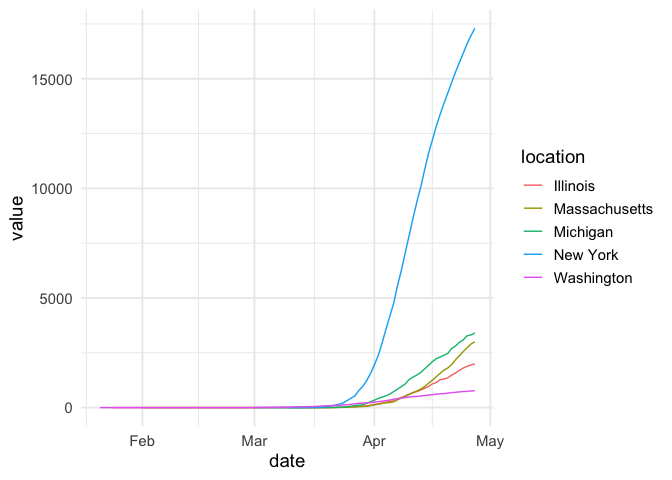

The covid19nytimes package harvests the data made freely available by the New York Times. See https://www.nytimes.com/article/coronavirus-county-data-us.html for more.
Installation
You can install the released version of covid19nytimes from CRAN with:
install.packages("covid19nytimes")
Or the latest development version from github
devtools::install_github("covid19R/covid19nytimes")
Data
The package has the data from states and counties. The package comes with static data that was downloaded at the time of the last package update.
| date | location | location_type | location_code | location_code_type | data_type | value |
|---|---|---|---|---|---|---|
| 2020-04-12 | Alabama | state | 01 | fips_code | cases_total | 3583 |
| 2020-04-12 | Alabama | state | 01 | fips_code | deaths_total | 93 |
| 2020-04-12 | Alaska | state | 02 | fips_code | cases_total | 270 |
| 2020-04-12 | Alaska | state | 02 | fips_code | deaths_total | 6 |
| 2020-04-12 | American Samoa | state | 60 | fips_code | cases_total | 0 |
| 2020-04-12 | American Samoa | state | 60 | fips_code | deaths_total | 0 |
| date | location | location_type | location_code | location_code_type | data_type | value |
|---|---|---|---|---|---|---|
| 2020-04-12 | Abbeville,South Carolina | county_state | 45001 | fips_code | cases_total | 9 |
| 2020-04-12 | Abbeville,South Carolina | county_state | 45001 | fips_code | deaths_total | 0 |
| 2020-04-12 | Acadia,Louisiana | county_state | 22001 | fips_code | cases_total | 99 |
| 2020-04-12 | Acadia,Louisiana | county_state | 22001 | fips_code | deaths_total | 5 |
| 2020-04-12 | Accomack,Virginia | county_state | 51001 | fips_code | cases_total | 15 |
| 2020-04-12 | Accomack,Virginia | county_state | 51001 | fips_code | deaths_total | 0 |
Getting the Most Up to Date Data
To get the most updated data, run the following functions
covid19nytimes_states <- refresh_covid19nytimes_states() covid19nytimes_counties <- refresh_covid19nytimes_counties()
Columns
The data follows the covid19R standard for tidy Covid-19 data. The data columns are as follows:
- date - The date in YYYY-MM-DD form
- location - The name of the location as provided by the data source. The counties dataset provides county and state. They are combined and separated by a
,, and can be split bytidyr::separate(), if you wish. - location_type - The type of location using the covid19R controlled vocabulary. Nested locations are indicated by multiple location types being combined with a `_
- location_code - A standardized location code using a national or international standard. In this case, FIPS state or county codes. See https://en.wikipedia.org/wiki/Federal_Information_Processing_Standard_state_code and https://en.wikipedia.org/wiki/FIPS_county_code for more
- location_code_type The type of standardized location code being used according to the covid19R controlled vocabulary. Here we use
fips_code - data_type - the type of data in that given row. Includes
total_casesandtotal_deaths, cumulative measures of both. - value - number of cases of each data type
Sample visualization
library(dplyr) #> #> Attaching package: 'dplyr' #> The following objects are masked from 'package:stats': #> #> filter, lag #> The following objects are masked from 'package:base': #> #> intersect, setdiff, setequal, union library(ggplot2) covid19nytimes_states %>% filter(location %in% c("Washington", "New York", "Massachusetts", "Michigan", "Illinois")) %>% filter(data_type == "deaths_total") %>% ggplot(aes(x = date, y = value, color = location)) + geom_line() + theme_minimal(base_size=14) + scale_y_continuous()
